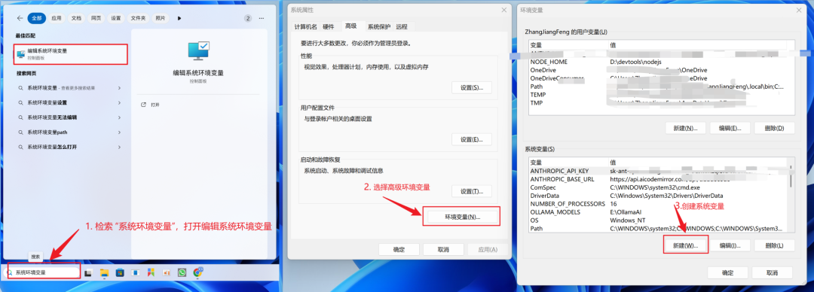
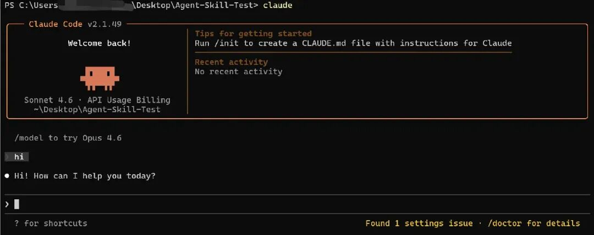
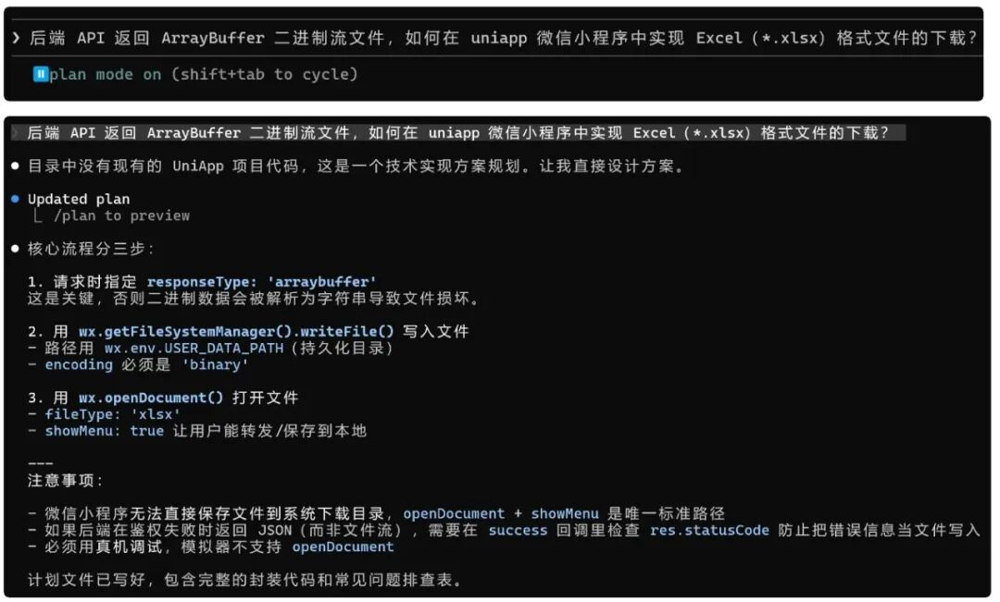
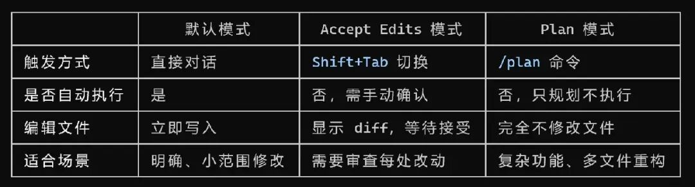
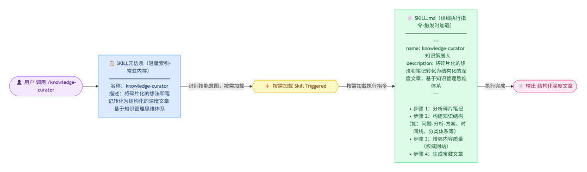
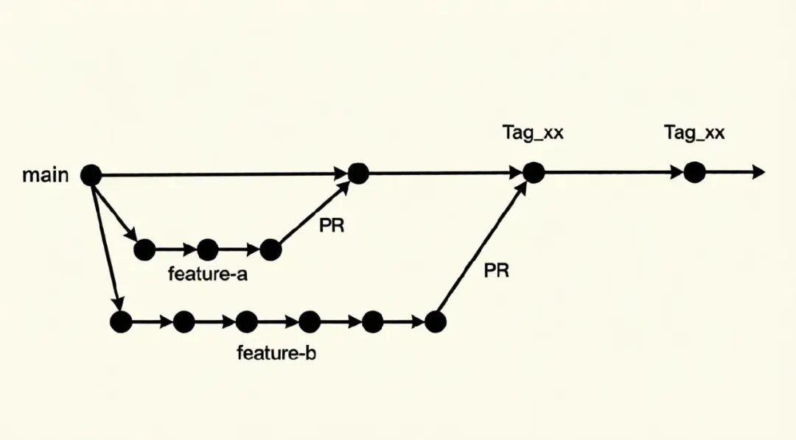
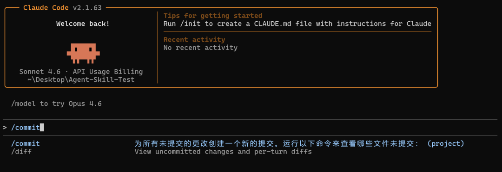

本文旨在帮助开发者或使用者解决使用 Claude Code 过程中遇到的常见障碍（如：支付限制、网络访问等问题），并提供详细的安装配置步骤，让你以低成本体验当前全球顶尖的 AI Agents 工具。文中会详细介绍关于Claude Code 最常的四个高级的核心技能-分别对应4个Level。实现从“Claude Code 小白”到“生产力翻倍”的进化之路。
本文旨在帮助开发者或使用者解决使用 Claude Code 过程中遇到的常见障碍（如：支付限制、网络访问等问题），并提供详细的安装配置步骤，让你以低成本体验当前全球顶尖的 AI Agents 工具。文中会详细介绍关于Claude Code 最常的四个高级的核心技能-分别对应4个Level。实现从“Claude Code 小白”到“生产力翻倍”的进化之路。
起步: 在 Windows 环境安装 Claude Code
解锁：开始使用 Claude Code，解决因支付或网络门槛而止步
Level 1: Claude Mardown 格式项目记忆提示词文件
解锁：无需每次都输入项目背景，写给 Claude 的说明文档（代码规范、项目架构、测试规范、项目启动、构建等）可作为项目知识资产文档
Level 2: Planning Mode 规划模式
解锁：让 AI 先做规划，再执行。使用者可使用 Esc 键随时介入、调整方向，方案审核通过后再执行，避免返工，从而节约更多时间。Claude Code 三种模式比较及实用场景
Level 3: Claude Skills 技能
解锁：掌握简单 Skills 工作原理及核心本质，Skills就是教会AI"这类事如何执行"的标准化流程模板。
实战：将碎片化的想法转化为系统化的文章Skills 应用
推荐 2 个初学 Skills:
find-skills 解决根据需求查找skill 库推荐 Skill-Creator 元 Skill，无需手动编写。通过交互式流程生成完整技能模板和目录结构.
Level 4: 运行多个 Claude Code 实例（多任务并行）
解锁：同一时刻可以并行执行多个待办任务，任务完成后，可将任务合并到主线分支上。
作者整理 6 种可供选择的方案，帮你解决支付和网络门槛，低成本体验当前全球最顶级的AI 智能助手。无论你是小白还是资深程序员，相信总有一种方法适合你。
方法一：Anthropic 官网 (体验最完整，但门槛高)官网地址：https://claude.ai适合人群：有海外支付方式、网络环境极度纯净的用户。方法二：OpenRouter (API 聚合平台)传送门：https://openrouter.ai/优势：聚合 400+ 模型。注意：目前不支持支付宝/微信，需要国际支付手段方法三：0011.ai (Claude Code 中转平台)传送门：https://0011.ai/i/003优势：专为程序员设计，支持 Claude Code 和 Codex。原生体验，支持双设备在线，防封号效果最好，送额度。方法四：gptsapi (国内 API聚合平台)传送门：https://gptsapi.net/api优势：支持微信支付！价格对标官网 API，适合开发者对接使用，无过度溢价。方法五：Poe (老牌聚合平台)传送门：https://poe.com/优势：Quora 旗下，积分制订阅，全球最大的模型聚合平台之一。方法六、AiCodeMirror （国内镜像、支持微信支付！）传送门：https://www.aicodemirror.com/优势：支持微信支付！镜像使用稳定，支持 Claude Code 、 Codex 和 Gemini CLI，体验当前全球最顶级的AI编程工具。
说明：以下安装方式使用方法六、AiCodeMirror 支持微信支付！镜像使用稳定，支持 Claude Code 、 Codex 和 Gemini CLI。体验当前全球最顶级的AI编程工具。
1.1、Windows Claude Code 安装实现步骤
步骤一、下载git
https://git-scm.com/downloads/win安装时全都选择下一步，使用默认安装路径
步骤二、下载nodejs
https://nodejs.org/zh-cn/download安装时全都选择下一步，使用默认安装路径
步骤三、验证安装情况
node -vnpm -v
步骤四、在PowerShell 窗口中安装 Claude Code 官方原版包
npm install -g @anthropic-ai/claude-code步骤五、设置Windows系统环境变量
5.1、设置系统环境变量

设置Windows系统变量环境
创建系统变量名及对应值，如下所示：
需要设置以下三个环境变量（变量名及变量值）：变量名：ANTHROPIC_BASE_URL，变量值：https://api.aicodemirror.com/api/claudecode变量名：ANTHROPIC_API_KEY，变量值：你的密钥变量名：ANTHROPIC_AUTH_TOKEN，变量值：你的密钥设置方法见「设置系统环境变量」
注意：需要重启终端才会生效。如果重启终端还不生效，重启电脑
步骤六、重启Windows PowerShell，验证claude-code 安装结果
claude -v步骤七、开始使用
安装完成后，您可以在任何项目目录中开始使用 Claude Code：
# 导航到你的项目cd Agent-Skill-Test# 启动 Claude Codeclaude
如下图所示，在你的项目目录下输入，hi 若能正常对话，代表完全可用

Level 1. CLAUDE.md 项目记忆提示词文件
若你有一个小程序项目，可使用/init 命令基于一个代码库初始化生成 一个新的 CLAUDE.md 文件。无论是给参与项目人或 Claude Code 编程阅读（建立代码规范、架构决策和测试标准）都可作为重要的参考依据。CLAUDE.md 文件本质上就是一个结构化 markdown 格式文件（结构化提示词），通常 CLAUDE.md 包含以下部分（可根据需要调整）：
- 项目简介：说明项目业务的应用场景。
- 目录结构：列出关键文件夹并解释作用。
- 技术栈：应用相关的技术栈。
- 代码规范：命名规则、代码风格、文件组织方式。
- 常用命令：开发、构建、测试、代码检查等命令。
- 环境配置：如何设置环境变量，重要配置说明。
- 测试指南：如何运行测试，测试文件位置。
- 常见问题/陷阱：可能遇到的坑或特殊注意事项。
如作者基于某特定预约项目初始化生成CLAUDE.md 格式文件后，内容包含如下：
# CLAUDE.md本文件为Claude Code (claude.ai/code)在此代码仓库中工作时提供指导。## 项目概述瑜伽预约应用 - 一个基于uni-app的多平台瑜伽预约管理应用。这个微信小程序/H5混合应用处理客户预约、管理员排班、房间管理和黑名单管理。**目标平台：**- 微信小程序（主要）- H5/Web- 支持多个小程序平台（支付宝、百度、QQ等）## 技术栈- **框架：** uni-app (Vue 3 + TypeScript + Vite)- **状态管理：** 带持久化的Pinia (pinia-plugin-persistedstate)- **UI组件：** wot-design-uni- **构建工具：** Vite 5.2.8- **特殊库：**- Cornerstone (DICOM医学图像查看)- Quill (富文本编辑器)- z-paging (分页组件)- AMap (高德地图)## 开发命令### 运行开发服务器```bash# 微信小程序npm run dev:mp-weixin# H5开发npm run dev:h5# 其他平台npm run dev:mp-alipay # 支付宝小程序npm run dev:app # 原生App```### 生产构建```bash# 微信小程序npm run build:mp-weixin# H5生产构建npm run build:h5# 其他平台npm run build:mp-alipaynpm run build:app```### 代码质量```bash# 类型检查npm run type-check# 代码检查和自动修复npm run lint```## 架构### 目录结构```src/├── api/ # 按功能组织的API请求│ ├── admin/ # 管理员相关API（排班、房间、黑名单等）│ ├── appointment/ # 预约API│ ├── booking/ # 预订管理│ ├── user/ # 用户管理│ └── ...├── pages/ # 应用页面/路由│ ├── access/ # 授权和登录│ ├── home/ # 首页│ ├── my/ # 用户个人资料│ ├── appointment/ # 预约页面│ └── admin/ # 管理员页面（排班、房间、黑名单等）├── components/ # 可重用的Vue组件├── stores/ # Pinia状态管理│ └── modules/ # 存储模块（用户等）├── utils/ # 工具函数│ ├── request/ # HTTP请求封装│ ├── file.ts # 文件处理│ ├── toast.ts # Toast通知│ └── ...├── enums/ # TypeScript枚举├── assets/ # 静态资源├── static/ # 公共静态文件└── common/ # 通用样式和工具```
Level 2. Planning mode 规划模式
2.1、Planning mode 规划模式
处理复杂任务前，Claude Code 会向用户澄清制定详细计划 让用户随时介入、调整方向，方案审核通过后再执行，避免返工，从而节约更多时间 适合架构设计、重构等需要深思熟虑的任务
如下图所示，输入问题后Claude Code 会向用户澄清制定详细计划，可使用使用 Esc 键让Claude Code 及时调整方向，避免返工，方案审核通过后再执行，避免返工，从而节约更多时间
说明：windows 环境下可使用（shift+tab）切换模式

2.2、Claude Code 三种模式对比

执行流程对比
- 默认模式：
用户提需求 → Claude 直接修改文件 - Accept Edits 模式：
用户提需求 → Claude 展示 diff → 用户接受 → 写入文件 - Plan Model 模式：
用户提需求 → Claude 探索代码 → 制定计划 → 用户批准 → 执行修改
如何选择？
修改明确的一行 bug 缺陷 → 使用默认模式 改几个文件，想看每一处变动 → Accept Edits 模式 新功能/重构，不确定影响范围 → Plan 模式
Accept Edits 模式是介于另外两者之间的折中方案：比默认模式多一道审查，比 Plan Model 模式轻量（不需要先规划再执行两个阶段）
Level 3. Claude Skills 技能
本质：将通用的工作流使用提示词进行模块化封装为可通用的 Skill 技能工具，提供给智能体使用。教Claude大模型如何处理数据。核心如下：
通过 / 命令扩展功能（如 /commit、/review-pr） 可以自定义技能来自动化常见工作流 类似于可复用的任务模板
3.1、SKILL技能内容设计
功能：将碎片化的想法转化为系统化的文章。SKILL.md 内容如下：
---name: knowledge-curator - 知识策展人description: 将碎片化的想法和笔记转化为结构化的深度文章，基于知识管理思维体系category: knowledge-managementtags:- knowledge-management- note-taking- writing- content-creation- research- documentation---# Knowledge Curator - 知识策展人将碎片化的想法和笔记转化为结构化的深度文章。## 使用方法```bash/knowledge-curator [碎片笔记内容]```或者直接调用并粘贴你的笔记内容。## 功能说明这个 skill 基于知识管理的核心理念，帮助你：1. **信息提取与分类**：识别笔记中的关键概念、主题和关系2. **知识结构化**：将零散信息组织成逻辑清晰的知识体系3. **内容增强**：从权威来源补充必要的背景信息和参考资料4. **文章生成**：输出结构完整、内容丰富的"宝藏文章"## 工作流程当你调用这个 skill 时，Claude 会执行以下步骤：### 步骤 1：分析碎片笔记- 识别核心主题和关键概念- 提取要点和想法- 发现概念之间的关联### 步骤 2：构建知识结构- 根据内容特点确定最佳文章结构（如：问题-分析-方案、时间线、分类体系等）- 组织信息层级和逻辑流程- 识别需要补充的信息缺口### 步骤 3：增强内容质量- 搜索权威来源（如官方文档、学术资料）验证和补充信息- 添加背景知识和上下文- 确保信息的准确性和完整性### 步骤 4：生成宝藏文章输出包含以下要素的完整文章：- **引人入胜的标题**：准确概括主题- **执行摘要**：3-5句话提炼核心价值- **主体内容**：- 清晰的标题层级（H2, H3）- 逻辑连贯的段落- 必要的代码示例、列表或图表说明- 关键概念的解释- **实践应用**：如何应用这些知识- **延伸阅读**：相关主题和深入方向- **参考来源**：所有引用的权威资料链接## 示例### 输入（碎片笔记）：```- Claude Code 可以自动创建 skill- skill 用 markdown 写- 可以用 TodoWrite 工具规划任务- WebFetch 能获取网页内容- 要避免过度工程化```### 输出（结构化文章）：会生成一篇关于"Claude Code Skill 开发最佳实践"的完整文章，包含：- Skill 的概念和用途- 开发流程和注意事项- 工具使用指南（TodoWrite, WebFetch 等）- 设计原则（避免过度工程化）- 实际案例和模板- 官方文档链接## 最佳实践1. **提供更多上下文**：越详细的碎片笔记，生成的文章质量越高2. **标注关键词**：用 ** 或标记你认为最重要的概念3. **指定特殊需求**：如果有特定的受众或风格要求，请在笔记中说明4. **添加问题**：记录下你的疑问，文章会尝试解答## 权威信息源本 skill 优先使用以下可信赖的信息源：- Claude 官方文档（docs.anthropic.com）- 技术官方文档和 API 参考- 知名技术博客和学术论文- 开源项目的官方仓库和文档## 注意事项- 生成的文章会自动保存为 markdown 文件（可选）- 所有引用的来源都会标注清楚- 如果碎片笔记信息不足，会主动询问关键问题- 遵循"简洁优于复杂"的原则，避免过度解释---## 技术实现本 skill 结合了以下能力：- **信息检索**：WebSearch 和 WebFetch 工具获取权威资料- **内容分析**：理解笔记的语义和结构- **知识图谱**：建立概念之间的关联- **写作优化**：确保文章的可读性和逻辑性开始使用这个 skill，让你的碎片想法成为有价值的知识资产！---## Skill 执行指令当用户调用 `/knowledge-curator` 命令时，请执行以下流程：### 第一步：理解输入内容1. 仔细阅读用户提供的碎片笔记或想法2. 识别核心主题、关键概念和要点3. 如果输入内容过于简短或不清晰，使用 AskUserQuestion 工具询问更多细节### 第二步：规划文章结构使用 TodoWrite 工具创建任务列表，包括：- 分析笔记内容，提取关键信息- 构建文章大纲和结构- 识别需要补充的信息- 搜索和验证权威来源（如需要）- 撰写文章各个部分- 添加参考资料和延伸阅读### 第三步：信息收集与验证如果需要补充或验证信息：- 使用 WebSearch 工具搜索权威来源（优先搜索 docs.anthropic.com, developer.mozilla.org, stackoverflow.com 等可信网站）- 使用 WebFetch 工具获取具体的文档或文章内容- 确保所有引用的信息准确可靠### 第四步：生成结构化文章输出包含以下部分的完整 markdown 文章：```markdown# [引人入胜的标题]## 摘要用 3-5 句话概括文章核心内容和价值## [主要内容章节]- 使用清晰的 H2 和 H3 标题层级- 逻辑连贯的段落- 必要时添加代码示例、列表或表格- 关键概念用粗体标注- 适当使用引用块强调重要信息## 实践应用如何将这些知识应用到实际场景中## 延伸阅读相关主题和深入方向## 参考资料列出所有引用的来源链接（如果使用了 WebSearch 或 WebFetch）```### 输出要求- 使用中文输出（除非用户指定其他语言）- 保持专业但易读的写作风格- 确保逻辑清晰、结构完整- 避免过度冗长，保持精炼- 所有外部引用必须标注来源链接### 特殊情况处理- 如果输入内容涉及技术主题，优先搜索官方文档验证- 如果涉及 Claude Code 相关内容，参考 Claude 官方文档- 如果笔记包含问题，在文章中尝试解答- 如果需要代码示例，确保代码的准确性和实用性
整体核心流程如下，其中：
SKILL 元信息，包含名称、描述，让 Claude Code 就像查询字典一样，无需加载整个文档，不占执行资源。
name: knowledge-curator - 知识策展人description: 将碎片化的想法和笔记转化为结构化的深度文章，基于知识管理思维体系
SKILL 元信息执行指令，仅在用户显示调用 /knowledge-curator 或隐式输入关键字“将输入碎片化内容转成结构化文章”时才触发。从而有效地节约上下文窗口 token 消耗

SKILL 元信息 — 轻量索引，常驻供 Claude 做意图匹配，不占执行资源
SKILL.md — 详细执行指令，仅触发时加载，避免无效 Token 消耗
按需加载 — 两者通过触发事件解耦，保持职责分离与可扩展性
接着，有了knowledge-curator 知识策展人技能SKILL.md 设计内容后，具体实战应用步骤如下
// 步骤 1. 创建 agent-skills 文件夹目录, 并进入该目录mkdir agent-skillscd agent-skills-----------------------------------------------------// 步骤 2. 在agent-skills 文件夹目录下创建.claude/skillsmkdir -p .claude/skills/knowledge-curator解释说明：- mkdir - "make directory" 的缩写，用于创建目录- -p - 这个选项有两个重要作用：a. 递归创建父目录 - 如果 .claude 目录不存在，会先创建它，然后再创建 skills 子目录b. 容错处理 - 如果目录已经存在，不会报错，命令会静默成功- .claude/skills - 要创建的目录路径：- .claude 是一个隐藏目录（以 . 开头）- skills 是其下的子目录-----------------------------------------------------// 步骤 3.在knowledge-curator 目录下创建知识策展人 SKILL.mdcd .claude/skills/knowledge-curator-----------------------------------------------------// 步骤 4. 最终，创建完成后目录结构如下当前工作目录下创建如下结构：agent-skills└──.claude└──skills└──knowledge-curator└──SKILL.md-----------------------------------------------------// 步骤 5. 回到agent-skills根目录下，输入claude 启动，使用 /knowledge-curator 显式调用或输入将碎片化想法触发SKILL，转为系统化（或结构化）文章即可触发
3.2、Skills 工作原理
Skills 使用渐进式披露（Progressive Disclosure）来高效管理上下文：
- 发现：在启动时，agents 仅加载每个可用技能的名称与描述（即 name & description），仅足够知道何时可能相关。
- 激活：当任务与技能描述匹配时，代理会将完整的
SKILL.md指令读入上下文。 - 执行：agents 遵循指示，必要时加载引用的文件-Reference 或执行捆绑的代码-Script。
1. 解决根据需求查找skill问题https://skills.sh/vercel-labs/skills/find-skills2. Skill-Creator 是 Claude 官方提供的元 Skill，用于快速创建和管理自定义Claude Skills，通过交互式流程生成完整技能模板和目录结构，无需手动编写https://github.com/anthropics/skills/tree/main/skills/skill-creator
Level 4. 运行多个 claude code 实例（多任务并行）
本质：模拟项目团队中不同成员分配任务后，同一时刻可以并行执行待办任务。任务完成后然后将任务合并到主线分支上。多任务并行核心：
- 并行处理多个独立任务
- 提高工作效率，节省时间
- 比如同时运行测试、构建、代码审查
// 基于 main 主任务分支创建两个功能任务分支git worktree add .claude/worktrees/feature-a origin/developgit worktree add .claude/worktrees/feature-b origin/develop// 进入指定的分支feature-a下, 即可开启相关功能模块的开发cd .claude/worktrees/feature-a

说明：feature-a, feature-b 为基于主任务 main 分支拉取的功能任务分支
feature-a 任务 a 分支, feature-b 任务 b 分支，可以是具体任务功能分支名称
在feature-a任务a分支下，创建.claude/commands文件下可自定义代码提交命令文件 commit.md的内容设计如下：
4.1、自定义/commit 提交命令
commit.md 文件内容如下
为所有未提交的更改创建一个新的提交。运行以下命令来查看哪些文件未提交：```bashgit statusgit diff HEADgit status --porcelain```添加未跟踪和已更改的文件。添加一个带有适当信息的原子提交。添加一个能反映我们工作的标签，如 "feat"（新功能）、"fix"（修复）、"docs"（文档）等。这个描述是在指导如何进行一次规范的 Git 提交操作，包括：1. 检查当前状态2. 添加所有更改3. 创建一个带有规范标签的提交信息其中提到的标签遵循的是约定式提交（Conventional Commits）规范：- feat: 新功能- fix: 修复bug- docs: 文档更新- style: 代码格式调整- refactor: 重构- test: 测试相关- chore: 构建过程或辅助工具的变动
feature-a 任务 a 分支 启动claude， 输入/commit 一键命令即可创建分支a提交

引用参考
https://github.com/anthropics/skills 官方 anthropics Skills 资源
https://agentskills.io/what-are-skills what-are-skills
https://claude.com/blog/skills-explained skills-explained
https://skills.sh/vercel-labs/skills/find-skills find-skills
https://github.com/SpillwaveSolutions Your source for AI coding agents, agentic skills, and developer tools that supercharge your development workflow.
https://github.com/coleam00/habit-tracker habit-tracker